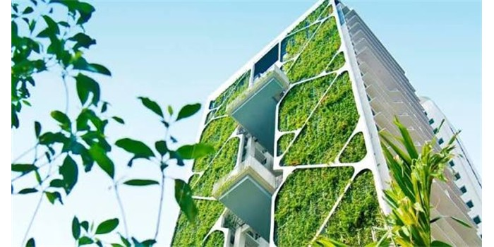

06 - 花园城市新加坡
Garden City Singapore

新加坡是一个面积很小的国家，土地非常紧张。城市里的高楼越来越多，人们每天看着冷冰冰的墙面和地板，都觉得少了自然的气息和感觉。但土地实在太少了，根本没有地方用来种树种花。2015年的夏天，建筑师陈伟明站在新加坡的一座高楼前，手里拿着设计图纸。他和他的团队有了一个新的想法：既然地面上没有地方种树，那就在大楼的墙上和房子顶上种！
这并不是一件容易的事。植物需要泥土和水，但泥土太重了，高楼的墙壁根本受不了。而且风很大，植物很容易变干。为了解决这些困难，工程师发明了一种又轻又透气的特殊泥土，还在大楼内部设计了收集雨水的系统。下雨的时候收集雨水，不下雨的时候就让水流到植物上。
几年后，这栋大楼建成了。从远处看，绿色的植物和鲜花在大楼的墙上一直向上生长，像一个向上长的森林。住在里面的人们一打开窗户，就能看到绿叶，见到红花。这座大楼成功地把植物邀请回来和人们住在一起，后来，那里越来越多的楼房用了这种方法，让新加坡变成了一个“花园城市”。